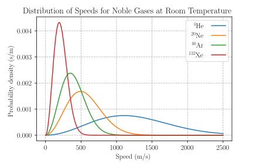

Maxwell速率分布函数
$$f(v) = 4\pi\left(\frac{m}{2\pi kT}\right)^{3/2}v^2\exp\left(-\frac{mv^2}{2kT}\right)$$
含义：$f(v)\dd v$ = 速率在 $v \sim v+\dd v$ 范围内的分子占总数的比率
归一化：$\int_0^\infty f(v)\dd v = 1$
三种统计速率（必背！）
| 名称 | 公式（用 $m$） | 公式（用摩尔质量 $M$） | 系数 |
|---|---|---|---|
| 最概然速率 $v_p$ | $\sqrt{\frac{2kT}{m}}$ | $\sqrt{\frac{2RT}{M}}$ | $\sqrt{2}$ |
| 平均速率 $\bar{v}$ | $\sqrt{\frac{8kT}{\pi m}}$ | $\sqrt{\frac{8RT}{\pi M}}$ | $\sqrt{8/\pi}\approx1.60$ |
| 方均根速率 $v_{rms}$ | $\sqrt{\frac{3kT}{m}}$ | $\sqrt{\frac{3RT}{M}}$ | $\sqrt{3}\approx1.73$ |
大小关系：$v_p < \bar{v} < v_{rms}$（$\sqrt{2} < \sqrt{8/\pi} < \sqrt{3}$）
记忆口诀：最概然 $\sqrt{2}$、平均 $\sqrt{8/\pi}$、方均根 $\sqrt{3}$，系数分别为 1.41、1.60、1.73，依次增大。


例：$T=300\,\text{K}$ 时 $N_2$（$M=0.028\,\text{kg/mol}$）的三种速率。
解
$v_p = \sqrt{\frac{2\times8.314\times300}{0.028}} = \sqrt{178157} \approx 422\,\text{m/s}$
$\bar{v} = \sqrt{\frac{8\times8.314\times300}{\pi\times0.028}} \approx 476\,\text{m/s}$
$v_{rms} = \sqrt{\frac{3\times8.314\times300}{0.028}} \approx 517\,\text{m/s}$